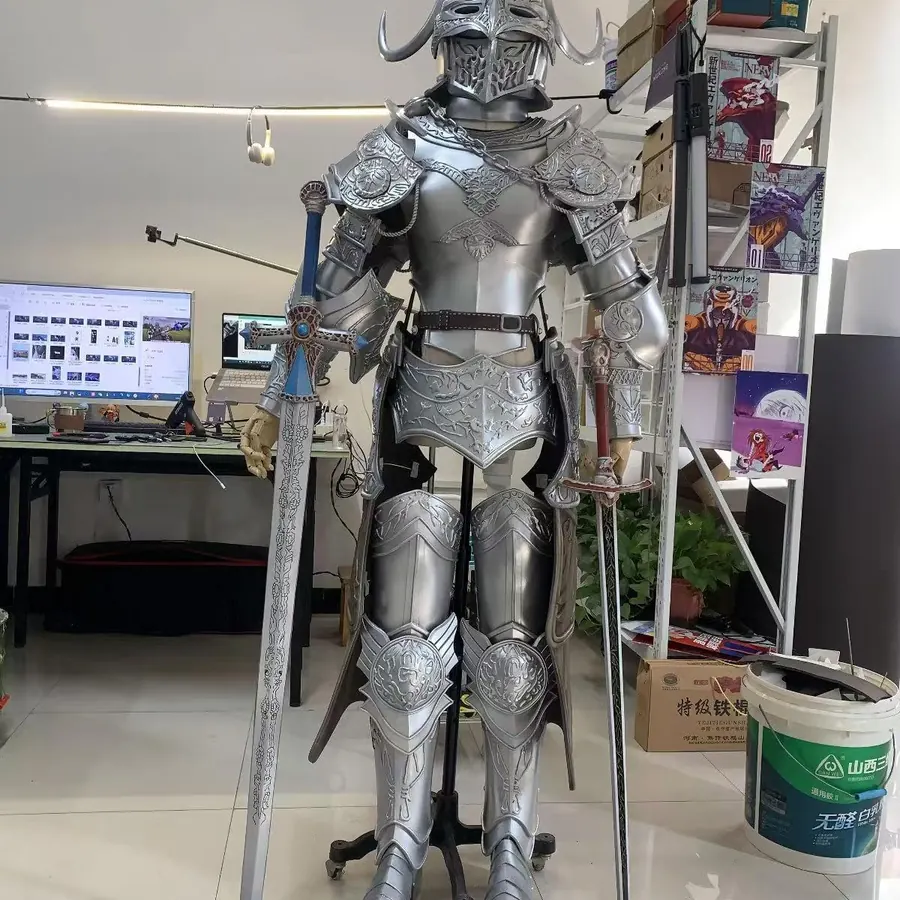

尺寸和数量是基础因素
同样是动漫道具制作，一把手持武器、一个大型机甲装置和一辆巡游花车的成本完全不同。尺寸越大，材料、结构、包装、运输和安装成本都会上升。数量越多，打样成本可以被摊薄，但生产周期和质检压力也会增加。
材料和工艺影响质感
常见工艺包括EVA造型、泡沫雕刻、3D头部结构、毛绒缝制、仿皮革、印花面料、金属骨架、喷涂和灯光结构。不同材料对应的视觉效果、耐用程度和维护方式不同，报价也会不同。
结构复杂度决定制作难度
机甲IP道具、兽装、吉祥物头套、带翅膀的舞台服和带机械活动的装置，需要更多结构测试和打样。复杂结构不仅制作费高，也需要预留调试时间，避免现场穿戴不稳或运输后损坏。
工期和现场服务也会影响价格
紧急项目可能需要加班排产和快速采购；跨城市项目可能需要特殊包装、物流和安装指导；大型活动可能需要现场调试或执行人员。这些都应该在报价前明确，避免后期追加费用。
怎样让报价更准确
- 提供角色图、参考图、尺寸、数量和使用场景。
- 说明活动日期、城市、预算范围和是否需要现场服务。
- 标明需要高还原展示、巡游互动、舞台表演还是长期陈列。
- 如果有运输、电梯、场地层高限制，也要提前说明。
结语
专业报价不是随口报数，而是把设计、材料、工艺、工期和交付风险全部算清楚。彩云端定制会根据项目资料给出更贴近实际执行的定制方案和预算建议。